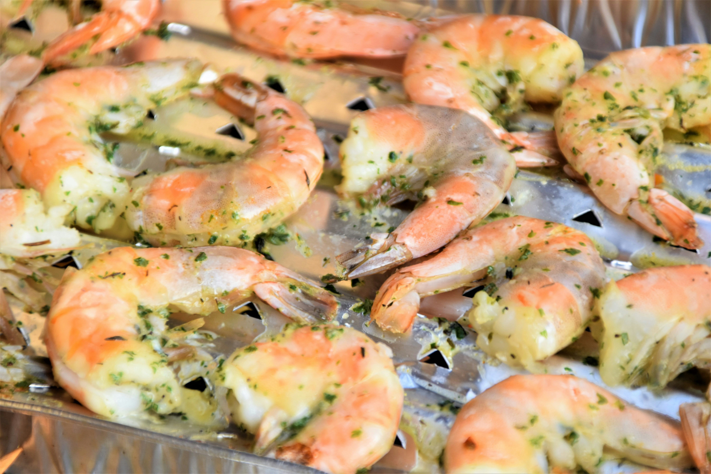

Photo Courtesy: Waldemar Brandt on Unsplash
Grilled Garlic and Herb Shrimp is a quick and flavorful seafood dish made by marinating shrimp in a mixture of garlic, fresh herbs, olive oil, and seasonings, then grilling them until tender and lightly charred. The result is juicy shrimp with a smoky, savory flavor and bright herbal notes, making it perfect as an appetizer, main course, or addition to salads, pasta, or rice dishes.